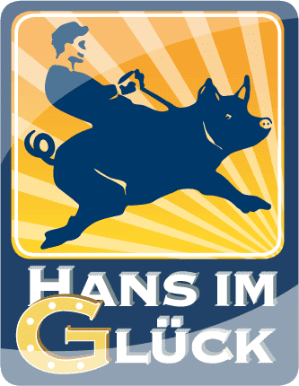

Hans im Glück
Se trata de una empresa alemana de juegos sobre mesa, que si bien ha ganado mucha fama en su país, no se dedican a
comercializar en el extranjero, sino que subcontratan la producción y ventas de sus productos a otras empresas como es
el caso de Devir para sus versiones en español, teniendo al menos el 95% de su producción en Europa, ya que quieren ser
partícipes en la lucha contra el calentamiento global y la desigualdad. Por esta misma razón, en el caso de sus ventas
en EEUU, han decidido trasladar su producción a dicho país para minimizar el envío de contenedores a través del
Atlántico. Actualmente están prestando más atención en el uso de recursos sostenibles.
Además de su perspectiva ecológica y económica al trabajar con diferentes empresas asociadas, desde hace ya algunos años
hacen especial caso a la perspectiva de género, lo que se ve reflejado en la descripción de las reglas, entre otros.